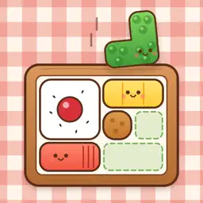
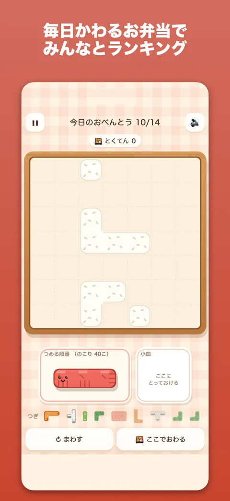
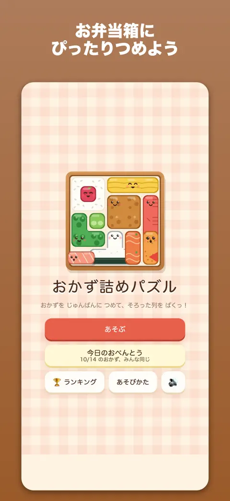

お弁当のブロックパズル（iPhone）
おかず詰めパズル
今日のおべんとう、
いちばん上手につめるのはだれ？
決まった順番で出てくるおかずを、お弁当箱につめるパズル。たてかよこが1列そろうと「ぱくっ！」。毎日かわる「今日のおべんとう」は、みんな同じ問題で勝負です。
- 毎日1問・みんな同じ問題
- ランキング
- 全200ステージ・20章
無料・広告あり／iPhone（iOS 18 以降）




← 横にスクロールできます →
「今日のおべんとう」で勝負
- みんな同じ問題きまった順に出てくるおかずを、すきまなく ぜんぶつめる1問。だれでも同じです。
- 順位のきまり方のこったおかずが少ない人、やりなおしが少ない人、タイムが短い人の順にならびます。
- 名前を決めるだけサインインはいりません。ニックネームを決めるだけで参加でき、記録はいつでも消せます。
ランキングに入るのはその日の1回目だけ。2回目からは練習で何回でも遊べます。「ふりかえり」で、つめた順に1手ずつ見なおせます。
こんな人におすすめ
- ブロックをすきまなく並べるのが好きな人
- かわいい食べ物のイラストが好きな人
- 先を読んで考えるパズルが好きな人
遊び方は3ステップ
- はこぶお皿の上のおかずを、指でお弁当箱へ。タップすると90度まわります。
- 先を読む「つぎ」に、このあとのおかずの順番がぜんぶ見えます。
- ぱくっ！たてかよこが1列そろうと食べて消えます。目標をやりとげたら「いただきます！」。
特徴
- 200ステージ・20章10ステージごとに新しいしかけ
- 11種類のおかずからあげ・タコさんウインナー・たまご焼きなど
- 7×7の大きなお弁当目標が2つや3つのステージも
- 毎日今日のおべんとうすきまなく、ぜんぶつめる1問
くわしい遊び方
決まった順番で出てくるおかずを、指でお弁当箱へはこびます。たてかよこが1列そろうと、おかずを「ぱくっ！」と食べて消えます。目標（列を消す・ごはんを食べる など）をやりとげたらクリアです。
- まわす：おかずをタップすると90度まわります（鍵のついたおかずは回せません）
- ステージ：全200ステージ・20章。ごはん・バラン・小皿・こおったおかずなどのしかけが出てきます。★はクリアのタイムで決まります（ヒント1回で +30秒。もどしても★はへりません）
- 今日のおべんとう：毎日かわる大きなお弁当です（だれでも同じ問題）。のこったおかずが少ない → やりなおしが少ない → タイムが短い 順でランキングに参加できます（ランキングに入るのは、その日の1回目の記録だけ）
- もどす・ヒント：「もどす」は1ステージ3回、「ヒント」は1ステージ1回まで無料です。そのあとは動画広告を見ると使えます（見るかどうかは選べます）
よくある質問
無料ですか？
はい、無料でダウンロードして遊べます（広告あり）。App Store のページからどうぞ。
どの端末で使えますか？
iPhone（iOS 18 以降）で使えます。Android 版はありません。
おかずが入らなくなった
「あらら…」の画面から、1つもどしてやりなおせます。「つぎ」に、このあとのおかずの順番がぜんぶ出ているので、先を読んでつめてみてください。
途中でやめたい
左上の一時停止ボタンから、つづける・やりなおす・もどる を選べます。
音を消したい
画面右上のスピーカーのボタンで、音のオン・オフを切り替えられます。
次のステージが選べない
ステージはクリアすると次が開きます。
記録を消したい・引き継ぎたい
記録はこの iPhone の中に保存しています（ランキングに名前をのせた場合は、ニックネームと記録だけを送ります。ランキングの画面の「ランキングから自分の記録を消す」でいつでも消せます）。アプリを削除すると記録も消えます。ほかの端末への引き継ぎにはまだ対応していません。
お問い合わせ
不具合やご要望は、メールでお知らせください。お使いの iPhone の機種と iOS のバージョンを書いていただけると助かります。